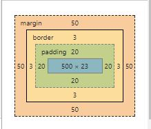

HTML Tags
Block vs Inline
- Block elements render vertically and inline elements render horizontally.
- Block elements occupy the entire space of the parent element.
- The concept of layout takes advantage of the fact that block elements occupy the whole are of the parent.
- Block elements can have width and height properties assigned to them.
- Block elements can contain other block elements or inline elements (called nesting of elements).
- You can't put block elements inside of inline elements.
- This is a no-no:
<span><div> hello </div></span>
- You can switch between block and inline using CSS (display: block, display:block-inline, display:inline)
Block
Examples of block level elements: MDN Block-level elements
Inline
Examples of inline elements: MDN Inline-level elements
Box Model
-
Use border, height, width, padding and margins to construct "boxes" to contain content with block element.
- Inline elements can have border, margin and padding but width and height properties are not supported in all browsers for inline elements.
- Margin: defines space between border and other outer elements.
In the image below the total height is: 169px and the total width is: 646px. You add (height or width) + margin + padding + border to get the dimensions of the box.

CSS classes, id and element selectors
- Tag or Element
- for example div, span, footer, section
- id
- add the id attribute with an id value to an element and then select using #, for example #right-nav
- class
- add the class attribute with a name value to an element and then select using . for example .right-nav
Navigation: internal and external
- Internal
- add an id attribute to a section of the page and then in then set up the anchor tag like this
<a href="#about">About</a>
- External within web site
- set up a tag like this for a static page in a file named about.html located under the component's folder
<a href="components/about.html">About</a>
- External outside of web site
- set up a tag like this for google
<a href="https://www.google.com">Google</a>
- Open page in new tab
- add target="_blank" to any of the above anchors, for example
<a href="https://www.google.com" target="_blank">Google</a>
- Stay where you are - used with JavaScript to add your own click event
- set up a tag like this to stay on the same page in the same location
<a href="">Click me</a>
File access: absolute, relative, relative to root
- Absolute
- for "https://www.google.com"
- Relative
- for example "img/red_ball.png"
- Relative to Rook
- for example "/index.html"
Tables
Use these tags (table, th, tr, td) to construct a table for tabular data. Nesting of these tags is prescribed by standards.
<table>
<tr>
<th></th>
<th></th>
</tr>
<tr>
<td></td>
<td></td>
</tr>
</table>
Background styles
- color
-
background-color: red;
- image
-
background-image: url("img.png")
- repeat
-
background-repeat: no-repeat;
- position
-
background-repeat: no-repeat;
- attachment
-
If "fixed", the background won't scroll with rest of page. Used for parallax scrolling.
background-attachment: fixed;
- size
-
background-size: cover;
Horizontal Layout: inline-block, float, flex, grid, absolute
see this: https://www.w3schools.com/css/css_navbar.asp It's common to use an unordered list for navigation. Whether horizontal or verical, remove the default bullet points
with this. The UL tag is the parent container for the LI list items. Let's say we have this html:
<ul class="navigation">
<li><a href="#about">About</a></li>
<li><a href="#contact">Contact</a></li>
<li><a href="#portfolio">Portfolio</a></li>
</ul>
ul.navigation {
display:grid;
grid-template-columns: repeat(3, 70px);
}
.navigation a {
text-decoration: none;
}
.navigation li {
list-style-type: none;
}
ul.navigation { list-style-type: none; }
- Inline-Block
li { display: inline; }
- Float
li {
float: left; }
a {
display: block;
padding: 10px;
color: black;
background-color: lightblue;
}
- Flex
-
ul.navigation {
width: 300px;
height: 30px;
display: flex;
justify-content: space-around;
list-style-type: none;
}
.navigation a {
text-decoration: none;
}
- Grid
-
ul.navigation {
display:grid;
grid-template-columns: repeat(3, 70px);
}
.navigation a {
text-decoration: none;
}
.navigation li {
list-style-type: none;
}
Video/Audio
Mobile First: Responsive layout and media queries